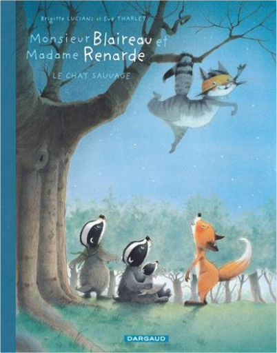
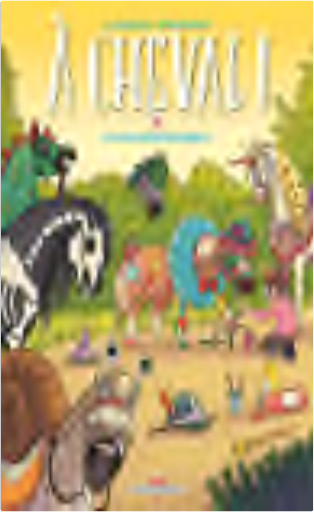

 monsieur blaireau et madame renarde, tome 6 : le chat sauvagebrigitte luciani, eve tharlet  2205074458  à cheval ! tome 4 - et vous trouvez sabot ?laurent dufreney & miss prickly Un nouvel épisode des aventures de Cookie, Kamboui, Flash et les autres. Garanti cent pur-sang humour et aventures hippiques. Retrouvez les chevaux de trait de la ligne claire, les capitaines paddock de la BD équestre... C'est la fête du club : spectacles, jeux, animations et invités sont au programme ! Nos héros, dans leur pré carré, sont maquillés comme des voitures volées, mais avec moins de chevaux sous le capot. Des stands de snack envahissent les lieux et Cookie va découvrir que tous les goûts sont dans la nature... et il compte bien les expérimenter. Cela risque d'être difficile pour son cavalier de garder l'assiette... |

Julien
Collection Total:
1 897 Items
1 897 Items
Last Updated:
Oct 30, 2021
Oct 30, 2021


 Made with Delicious Library
Made with Delicious Library